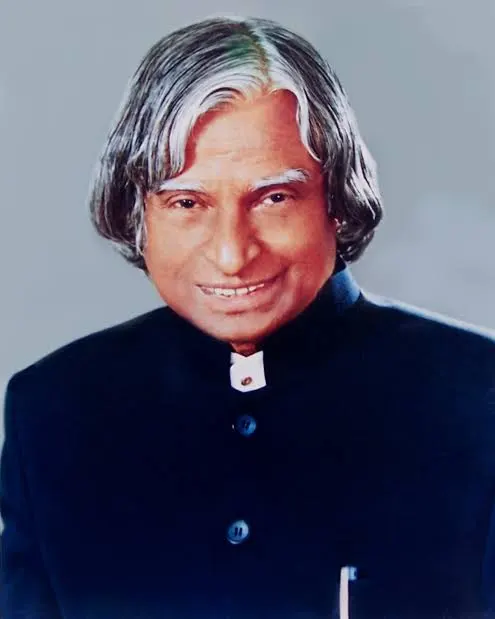

The Missile Man of India and the People's President

Avul Pakir Jainulabdeen Abdul Kalam was born on October 15, 1931, in Rameswaram, Tamil Nadu. Coming from a humble background, he worked hard to support his family while pursuing his education. He went on to study physics and aerospace engineering, eventually playing a pivotal role in India's civilian space program and military missile development.
"Dream, dream, dream. Dreams transform into thoughts and thoughts result in action."